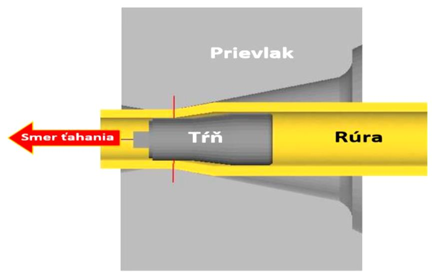
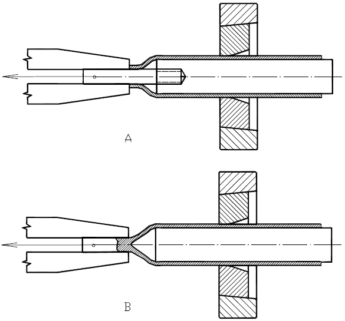
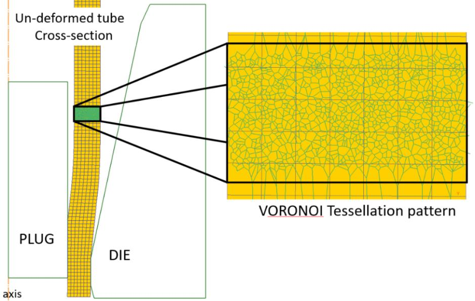

Ťahanie bezšvových rúr: teória, simulácia a validácia
Prednáška 4 · Modelovanie a simulácia procesov I – tvárnenie (MSPO2_6I)
Zimný semester 2026/2027
Materiálovotechnologická fakulta · STU Bratislava

Prievlačné ťahanie rúry Ø16 → Ø12 mm, efektívne pretvorenie v DEFORM 3D (© Bílik, Necpal, Sobota 2023, Spektrum STU)
Prečo práve ťahanie rúr?
- Presné bezšvové rúry: hydraulické valce, automobily, kotly, výmenníky tepla
- Za tepla sa dosiahne tvar, za studena presnosť rozmerov, povrch a pevnosť
- Rúry s vnútorným rebrovaním – vyšší prestup tepla v energetike
- Skúšanie „pokus–omyl“ v prevádzke je drahé → simulácia MKP
- Spolupráca s ŽP Podbrezová, projekty APVV-15-0319 a APVV-18-0418

Rúra Ø18 × 1 mm pred ťahaním a po ťahaní na Ø12 mm (© Bílik, Necpal, Sobota 2023)
Z čoho a v akých rozmeroch sa rúry ťahajú
| Skupina | Príklady | Rozsah za studena | Použitie |
|---|---|---|---|
| Uhlíkové a nízkolegované ocele | E235, E355, 11353, 11523, 12022, 15020 | presné rúry podľa EN 10305-1 | valce, strojárstvo, tlakové potrubia, kotly |
| Korózivzdorné ocele | 1.4301, 1.4404, 1.4541, duplex 1.4462 | — | chemický a potravinársky priemysel |
| Meď a jej zliatiny | Cu 99,9, mosadze, Cu–Ni | Ø2–160 mm, stena 0,15–10 mm | chladiče, potravinárstvo |
| Hliník a jeho zliatiny | EN AW 6060, 6061, 6082, 2024, 7075 | Ø2–180 mm, stena 0,4–10 mm | doprava, ľahké konštrukcie |
- V našich štúdiách: E235, E355 a SPT360 – feriticko-perlitické ocele s dobrou tvárnosťou za studena
Najprv za tepla: predvalok a valcovanie
- Kontinuálne liaty blok → ohrev → dierovanie → predlžovanie na tŕni
- Kosé valcovanie: Mannesmannov jav – ťahové napätie v jadre otvorí dutinu
- Pretlačovacia stolica, kroková pec, ťahová redukovňa
- Výsledok: rúra za tepla, napr. Ø70 × 6,3 mm alebo Ø28 × 4 mm
- Excentricita a vnútorný „polygón“ z valcovania sa prenášajú do ťahania

Výroba rúr valcovaním za tepla v ŽP a.s. (© Bílik, Necpal, Sobota 2023 podľa ŽP)
Kam zapadá dnešná prednáška
- Minule: pretvárny odpor a jeho modely – teraz ich použijeme
- Dnes: technológia → analytika → nastavenie modelu MKP → prípadové štúdie → optimalizácia a validácia
- Cieľ: aby ste vedeli sami zostaviť, overiť a kriticky posúdiť model ťahania
Program dnešnej prednášky (152 min, s prestávkou podľa potreby)
| Čas | Blok | Obsah |
|---|---|---|
| 0:00 – 0:14 | Úvod | Motivácia, materiály, výrobný reťazec rúr |
| 0:14 – 0:40 | I · Základy ťahania | Spôsoby ťahania, prievlak a tŕň, pretvorenie, parametre |
| 0:40 – 1:00 | II · Analytické metódy | Ideálna práca, metóda rezov, optimálny uhol, medzná redukcia |
| 1:00 – 1:32 | III · Numerická simulácia | Implicitne / explicitne, Lagrange / ALE, nastavenie modelu |
| 1:32 – 2:08 | IV · Prípadové štúdie | Vlastné články: trenie, uhol, hrúbka steny, DOE, rebrované rúry |
| 2:08 – 2:20 | V · Optimalizácia a validácia | Kalibrácia vs validácia, odporúčania, postup |
| 2:20 – 2:32 | Zhrnutie a otázky | Hlavné poznatky, kontrolné otázky |
Časť I — Základy procesu ťahania
Drôt, tyč a rúra · prievlak a tŕň · pretvorenie · parametre procesu
Drôt, tyč a rúra – spoločné a rozdielne
| Výrobok | Vstupný polotovar | Typický stroj | Poznámka |
|---|---|---|---|
| Drôt | valcovaný drôt vo zvitku | viacnásobný ťahací stroj s bubnami | veľa ťahov za sebou, vysoké rýchlosti, malá redukcia na ťah |
| Tyč | tyče alebo zvitky | ťahacia stolica | menej ťahov, väčšie priemery |
| Rúra | dutý predvalok | reťazová alebo hydraulická ťahacia stolica | kontrola hrúbky steny a vnútorného priemeru, tŕň |
- Fyzika je rovnaká: ťahové napätie na výstupe musí ostať pod medzou klzu ťahaného materiálu
Štyri spôsoby ťahania rúr

a) prievlačné ťahanie (bez tŕňa)

b) pevný (valcový) tŕň na tyči

c) plávajúci tŕň

d) ťahanie na tyči (pohyblivý tŕň)
Porovnanie spôsobov ťahania
| Spôsob | Vnútorný nástroj | Účinok na rúru | Výhody | Obmedzenia |
|---|---|---|---|---|
| Prievlačné | žiadny | zmenší D, stena sa mierne zhrubne | najjednoduchšie | vnútorný povrch a d nekontrolované |
| Pevný tŕň | tŕň na tyči | určí D aj d, zmenší stenu | presnosť, vnútorný povrch | dĺžka rúry obmedzená tyčou, vyššia sila, R ≈ do 30 % |
| Plávajúci tŕň | voľný tŕň v rovnováhe | zmenší D aj stenu | dlhé rúry do zvitku, vyššie rýchlosti, R do ≈ 45 % | citlivý na geometriu a mazanie |
| Na tyči | tyč ide s rúrou | zmenší D aj stenu | tenké steny (< 1 mm), trenie na tyči pomáha | tyč treba vytiahnuť – odvaľovanie rúry |
Smer trenia: na pevnom tŕni trenie brzdí rúru (zvyšuje silu), na pohyblivej tyči ju ťahá dopredu (znižuje silu).
Tŕne a ich poloha
- Valcový alebo tvarový pevný tŕň na tŕňovej tyči
- Krúžok zo spekaného karbidu naskrutkovaný na oceľové teleso
- Poloha tŕňa voči kalibračnej časti určuje, kde sa stena stenčuje
- Opotrebenie tŕňa býva väčšie ako opotrebenie prievlaku
- Rebrovaný (profilový) tŕň → rúry s vnútorným rebrovaním (časť IV)

Tŕň: 1 – karbidový krúžok, 2 – teleso

Poloha tŕňa v prievlaku
Redukcia, pretvorenie a súčiniteľ predĺženia
- Redukcia R – pomerné zmenšenie plochy prierezu rúry ťahaním, vyjadrené v % pôvodného prierezu S0.
- Pretvorenie φ (logaritmické) – prirodzený logaritmus pomeru prierezu pred a po ťahaní; pretvorenia po sebe idúcich ťahov sa sčítavajú.
- Súčiniteľ predĺženia λ – udáva, koľkokrát sa rúra ťahaním predĺži; pri stálom objeme sa rovná pomeru prierezov S0/Sr (λ > 1).
- \(d_s=D-s\) – stredný priemer steny
- Príklad: Ø70 × 6,3 → Ø55 × 4,75 mm: R = 40,5 %, φ = 0,52

Rozmery rúry pred a po ťahaní (© Bílik, Necpal, Sobota 2023)
Napäťovo-deformačný stav v prievlaku
- Pozdĺžne: ťahové σ₁, radiálne a tangenciálne: tlakové σ₂, σ₃
- Osovo symetrický stav, σ₂ ≈ σ₃
- Ak σ₁ prekročí medzu klzu za prievlakom → rúra sa predlžuje alebo pretrhne

1 – držiak, 2 – prievlak, 3 – pevný tŕň; zóny I–III (© Bílik, Necpal, Sobota 2023)
Kľúčové parametre procesu
| Parameter | Vplyv |
|---|---|
| Uhol prievlaku α | malý α: dlhý kontakt, veľa trenia · veľký α: redundantná deformácia, tlak na nástroj → optimum |
| Redukcia | určuje silu a spevnenie; obmedzená pevnosťou ťahaného materiálu |
| Trenie a mazanie | sila, opotrebenie, povrch, teplo; Coulomb μ alebo faktor trenia m |
| Rýchlosť ťahania | mazací film, ohrev; pri pomalom ťahaní rúr na silu takmer bez vplyvu |
| Kalibračná dĺžka | presnosť priemeru; príliš dlhá zvyšuje trenie |
| Geometria tŕňa | uhol a valcová dĺžka určujú d a hrúbku steny |
| Materiál | krivka spevnenia, citlivosť na rýchlosť, excentricita vstupnej rúry |
Spevnenie za studena: jeden ťah, veľká zmena
| Ťah (E235, stena 1 mm) | R [%] | Rp0,2 [MPa] | Rm [MPa] | A [%] |
|---|---|---|---|---|
| Ø14 → Ø12 | ≈ 13,5 | 285 → 415 | 412 → 498 | 25 → 10 |
| Ø16 → Ø12 | ≈ 24 | 295 → 439 | 408 → 531 | 28 → 10 |
| Ø18 → Ø12 | ≈ 32,5 | 285 → 469 | 399 → 568 | 30 → 8 |
- Pevnosť rastie, ťažnosť klesá na tretinu → po niekoľkých ťahoch treba žíhať
- Pre simuláciu: krivka spevnenia rozhoduje o sile aj o medznej redukcii
Čo musí model zachytiť
- Sila a napätie ťahania – dimenzovanie stolice, riziko pretrhnutia
- Rozmery: D, d, hrúbka steny, kruhovitosť
- Pretvorenie a spevnenie v stene
- Zvyškové napätia z nerovnomernej deformácie
- Zaťaženie a opotrebenie prievlaku a tŕňa
Časť II — Analytické metódy ťahania
Ideálna práca · metóda rezov · redundantná práca · medzná redukcia · optimálny uhol
Prečo najprv analytika – a označenie
- Rýchly odhad sily a výkonu – dimenzovanie stolice
- Trendy: vplyv redukcie, trenia a uhla
- Referencia na kontrolu simulácie
- Pravidlo: simulácii neverte, kým ju neporovnáte aspoň s jednoduchým odhadom
| Symbol | Význam |
|---|---|
| \(A_0, A_1\) (\(S_0, S_r\)) | prierez pred / po ťahu |
| \(r=(A_0-A_1)/A_0\) | redukcia prierezu |
| \(\varepsilon=\ln(A_0/A_1)\) | skutočné (logaritmické) pretvorenie |
| \(\sigma_f\) | stredný pretvárny odpor |
| \(\alpha,\ \mu\) | polovičný uhol prievlaku, súčiniteľ trenia |
| \(\sigma_d,\ F=\sigma_d A_1,\ P=F v\) | napätie ťahania, sila, výkon |
Metóda rezov (slab method)
- Tenký element v redukčnom kuželi, rovnováha síl v smere ťahania
- Predpoklady: konštantné σf, Coulombovo trenie, rovinné rezy ostávajú rovinné
- Pre rúry rovnaký princíp: B obsahuje aj trenie na tŕni, miesto plochy vystupuje hrúbka steny
- Redundantná práca tu nie je – pridáva sa korekciou

Element v redukčnom kuželi: σ, dσ, normálový tlak σn a trenie f·σn (© Bílik, Necpal, Sobota 2023)
Ťahanie na pevnom tŕni – tri zóny
- Zóna I: zmenšuje sa len priemer, stena konštantná
- Zóna II: zmenšuje sa priemer aj stena (tŕň v kontakte)
- Zóna III: kalibrácia – trenie na prievlaku aj na tŕni
- \(F=\sigma_{IIIc}\,S_r\) – napätie na konci zóny III krát výsledný prierez

Zóny I–III pri ťahaní na pevnom tŕni (© Bílik, Necpal, Sobota 2023)
Zóna I – zmenšenie priemeru
- Okrajová podmienka: na vstupe σI = 0 (bez protiťahu)
Element v zóne I (© Bílik, Necpal, Sobota 2023)
Zóna III – kalibrácia a ťažná sila
- Exponenciálny rast s dĺžkou kalibrácie l a trením f na oboch plochách
- Zjednodušene: \(F_{\check{t}}=\sigma_{pstr}\,S_r\,\varphi/\eta_F\), \(\eta_F\) = 0,4–0,6 (φ = 0,15) až 0,7–0,8 (φ = 0,5)

Element v zóne III (© Bílik, Necpal, Sobota 2023)
Medzná redukcia na jeden ťah
- Podmienka: \(\sigma_d < \sigma_f\) materiálu za prievlakom
- Ideálne, bez spevnenia: \(\varepsilon_{max}=1\Rightarrow r_{max}=1-1/e\approx 63\,\%\)
- So spevnením \(\sigma=K\varepsilon^n\): \(r_{max}=1-e^{-(1+n)}\)
- S trením, redundantnou prácou a bezpečnosťou: drôt 20–30 % na ťah
- Rúry: pevný tŕň ≈ do 30 %, plávajúci tŕň ≈ do 45 %, celkovo ≈ 50 %
| n | rmax (ideálne) |
|---|---|
| 0 | 63 % |
| 0,2 | 70 % |
| 0,44 | 76 % |
Spevnenie pomáha: ťahaná časť je pevnejšia ako deformovaná zóna.
Riešený príklad: tyč Ø10 mm, r = 20 %
- A₀ = 78,54 mm², A₁ = 62,83 mm², D₁ = 8,94 mm
- ε = 0,223, σf = 500 MPa, α = 6°, μ = 0,1, v = 1 m/s
- F = 253 · 62,83 ≈ 15,9 kN, P = F·v ≈ 15,9 kW
- Kontrola: 253 MPa < 500 MPa → tyč sa ťahá, nepretrhne (rezerva ≈ 2×)
| Model | σd [MPa] |
|---|---|
| Ideálna práca | 112 |
| Metóda rezov (B = 0,951) | 196 |
| Siebel, α = 3° | 342 |
| Siebel, α = 6° | 253 |
| Siebel, α = 10° | 233 |
| Siebel, α = 15° | 240 |
Analytika verzus meranie pri rúre
a) Rúra na tŕni Ø30 × 3 → Ø27 × 2,5 mm
- A₀ = 254,5 mm², A₁ = 192,4 mm², r = 24,4 %, ε = 0,28
- σf = 300 MPa → ideálne F ≈ 16 kN
- Zjednodušene, ηF = 0,5 → F ≈ 32 kN
b) Prievlačné ťahanie Ø16 × 2 → Ø12 mm (E235)
- S₀ = 89,6 mm², S = 65,4 mm², φ = 0,315
- σpstr = (295 + 439)/2 ≈ 367 MPa
- Ideálne 7,6 kN · ηF = 0,5–0,6 → 12,6–15,1 kN · Siebel (α ≈ 12°, μ = 0,08) → 13,8 kN
- Meranie 21,5–22 kN · MKP 20,5 kN
Jednoduchá analytika pri prievlačnom ťahaní podhodnotí silu o ≈ 35 % – nezachytí ohyb steny na vstupe, zhrubnutie steny ani reálne mazanie. Dobrá na rád veličiny, nie na návrh.
Čo analytika dokáže – a čo nie
| Analytika dokáže | Analytika nedokáže |
|---|---|
| strednú silu a napätie ťahania | lokálne rozloženie pretvorení, napätí, teploty |
| trendy: redukcia, trenie, uhol | zvyškové napätia |
| medznú redukciu, optimálny uhol | tlak a opotrebenie nástroja v detaile |
| rýchlo, bez softvéru | excentricitu, ovalitu, rozloženie hrúbky steny |
| chyby (praskliny, povrchové chyby) |
Analytika = prvý návrh a kontrola vierohodnosti. MKP = keď záleží na lokálnych poliach, rozmeroch, nástrojoch a chybách.
Časť III — Numerická simulácia a nastavenie modelu ťahania
Implicitne / explicitne · Lagrange / ALE · materiál · trenie · sieť · okrajové podmienky
Model = štyri nezávislé voľby
| Voľba | Možnosti | Na čo odpovedá |
|---|---|---|
| Časová integrácia | implicitná / explicitná | Ako sa v kroku rieši pohybová rovnica? |
| Opis siete | Lagrange / ALE / Euler | Ide sieť s materiálom? |
| Formulácia materiálu | tuhoplastická / elastoplastická | Počítame aj pružné deformácie? |
| Rozmer modelu | 2D osovo symetrický / 3D | Je úloha symetrická? |
Často sa zamieňajú – napr. „explicitný“ neznamená „3D“ a „Lagrange“ neznamená „implicitný“.
Typické kombinácie v softvéri
| Softvér / štúdia | Typická kombinácia |
|---|---|
| DEFORM 2D / 3D | implicitne, aktualizovaný Lagrange s automatickým preskieťovaním; tuhoplastický (tokový) alebo elastoplastický materiál; ALE riešič pre ustálené procesy |
| Abaqus/Standard | implicitne, Lagrange, elastoplasticky |
| Abaqus/Explicit | explicitne, Lagrange alebo adaptívna ALE sieť, elastoplasticky |
| LS-DYNA | explicitne aj implicitne; plávajúci tŕň riešený implicitne, 2D osovo symetricky |
| MSC.Superform (Neves a kol.) | elastoplastická MKP ťahania na pevnom tŕni, porovnaná s riešením hornej hranice |
Základný model ťahania rúry – vstupy
| Položka | Čo zadať | Poznámka z praxe |
|---|---|---|
| Geometria | rúra D₀, s₀, L; prievlak α, kalibrácia; tŕň | rúra dosť dlhá na ustálený stav |
| Nástroje | tuhé alebo pružné | tuhé stačia na silu a pretvorenie |
| Materiál | krivka σ(ε, ε̇, T), príp. E, ν | z ťahovej skúšky, napr. σ = c·εⁿ·ε̇ᵐ + y |
| Trenie | μ alebo m, zvlášť prievlak a tŕň | najcitlivejší vstup – kalibrovať meraním sily |
| Okrajové podmienky | rýchlosť / posuv; uchytenie tŕňa | 9 m/min v našich štúdiách |
| Sieť | veľkosť prvkov, prvky cez stenu | 4–8 prvkov cez stenu v 2D |
| Teplo | deformačné a trecie teplo | pri pomalom ťahaní často zanedbané |
| Viac ťahov | stav po 1. ťahu = začiatok 2. ťahu | bez žíhania sa prenáša aj spevnenie |
Trenie – najcitlivejší vstup
- Coulomb – pri nízkom tlaku; šmykový model – pri vysokom tlaku (objemové tvárnenie, DEFORM)
- Literatúra uvádza pre ťahanie μ ≈ 0,02–0,03 – nespoľahlivé pre konkrétne mazivo a nástroj
- Naše hodnoty: m = 0,08 (všeobecne), m ≈ 0,053–0,054 (karbidový prievlak, inverzne z merania)
- LS-DYNA, plávajúci tŕň: μ prievlaku 0,05 → 0,10 zvýši silu ≈ o 20 %
Implicitná analýza
- V každom kroku sa rieši sústava rovníc (Newton–Raphson)
- Bezpodmienečne stabilná – veľký krok, obmedzený len konvergenciou
- Rieši rovnováhu (kvázistaticky)
Nastavenie pre ťahanie:
- kvázistatický krok, riadený posuvom
- zabrániť pohybu tuhého telesa (tŕň uchytiť)
- kontakt prievlak–rúra a tŕň–rúra s trením, malé kroky pri prvom dotyku
- krok: uzol sa nesmie posunúť o viac ako zlomok najmenšieho prvku
| Výhody | Nevýhody |
|---|---|
| efektívna pre pomalé procesy | drahé kroky, veľa pamäte |
| hladké výsledky | konvergencia pri zmenách kontaktu |
| priamo odľahčenie a zvyškové napätia | plávajúci tŕň treba stabilizovať |
| veľké kroky | chyby z mapovania pri preskieťovaní |
LS-DYNA, plávajúci tŕň: statické riešenie dalo podobnú silu ako dynamické za 22 min namiesto 104 min.
Explicitná analýza
- Nový stav sa vypočíta priamo zo súčasného – lacný krok
- Podmienečne stabilná: \(\Delta t \le L_{min}/c\), \(c=\sqrt{E/\rho}\)
- Vždy dynamická rovnováha – rýchlosť zaťaženia má vplyv
50 mm pri 9 m/min = 0,33 s → ≈ 7 miliónov krokov
- Preto: zrýchlenie procesu a / alebo škálovanie hmotnosti
- Kontrola: kinetická / vnútorná energia (ALLKE/ALLIE) < 5–10 %
| Výhody | Nevýhody |
|---|---|
| žiadne problémy s konvergenciou | veľmi malý krok |
| lacné kroky, málo pamäte | zrýchlenie môže pokaziť kvázistatiku |
| voľný pohyb plávajúceho tŕňa | zašumené výsledky – filtrovať |
| jednoduché porušovanie | citlivosť na malé prvky |
Implicitne alebo explicitne?
| Implicitne | Explicitne | |
|---|---|---|
| Krok | veľký, drahý | malý, lacný |
| Stabilita | bezpodmienečná | podmienečná (Δt kritické) |
| Kontakt | môže zlyhať konvergencia | robustný |
| Sila | hladká | oscilujúca – priemerovať |
| Zvyškové napätia | priamo | prenosom do implicitného riešiča |
| Typicky pre ťahanie | DEFORM, Abaqus/Standard | Abaqus/Explicit, LS-DYNA |
Hybrid v praxi: tvárnenie explicitne → prenos výsledku → odpruženie a zvyškové napätia implicitne.
ALE a Eulerov opis
- ALE: sieť sa môže pohybovať nezávisle od materiálu, zachováva topológiu → menšie skreslenie
- Euler: sieť je pevná v priestore, materiál ňou preteká (Abaqus CEL)
- Ustálený stav: geometria v prievlaku sa nemení → modelovať len krátky úsek s vtokom a výtokom
- Publikované nastavenie ALE pre ťahanie rúr sme v zdrojoch nenašli – väčšina štúdií je lagrangeovská
| Výhody | Nevýhody |
|---|---|
| menšie skreslenie siete | náročnejšie okrajové podmienky |
| malá oblasť, krátky výpočet | len ustálený stav – bez nábehu a dobehu |
| hladké polia | história sa prenáša s chybou |
| nie je v každom riešiči |
Tuhoplastická verzus elastoplastická formulácia
| Tuhoplastická (toková) | Elastoplastická | |
|---|---|---|
| Myšlienka | pružné deformácie zanedbané, neznáme rýchlosti, nestlačiteľnosť penalizáciou | pružné aj plastické deformácie |
| Základ | Kobayashi, Oh, Altan; klasický riešič DEFORM | Abaqus, MSC.Superform, voľba v DEFORM |
| Vhodná na | silu, pretvorenie, hrúbku steny | zvyškové napätia, odpruženie |
| Nevhodná na | zvyškové napätia, pružné javy | – (vyššia cena, horšia konvergencia) |
Nástroje: tuhé stačia na silu a pretvorenie; pružný prievlak (prípadne s nalisovaným krúžkom) pre napätie a opotrebenie nástroja.
Ako sme nastavovali modely v DEFORM
| Položka | 2D (02, 03, 04, 09) | 3D (05, 07, 10; kniha) |
|---|---|---|
| Opis | Lagrange, osovo symetricky | Lagrange, štvrtinový model / celá rúra |
| Sieť | 4–8 štvoruholníkov cez stenu, bez preskieťovania | tetraédre, 160 000–592 000 prvkov, preskieťovanie každých 50 krokov |
| Nástroje | tuhý prievlak, tuhý tŕň | |
| Rýchlosť | 9 m/min; 60 mm/min (DOE) | 9 m/min; 1–800 mm/s (parametrické štúdie) |
| Trenie | šmykové, m = 0,08 alebo 0,054 (z merania) | |
| Okrajová podmienka | ťahá sa hrot rúry | rúra 10: posúvajú sa nástroje, koniec rúry upnutý – lepšia konvergencia |
| Vyhodnotenie | len ustálená stredná časť rúry; sila = priemer v ustálenom stave | |
Čo môžeme od ktorej simulácie čakať
| Výsledok | Impl. Lagrange tuhoplast. | Impl. Lagrange elastoplast. | Explicitne | ALE ustálený |
|---|---|---|---|---|
| Sila ťahania | áno | áno | áno, filtrovať | áno |
| Pretvorenie, hrúbka steny | áno | áno | áno | áno (hladké) |
| Zvyškové napätia | nie | áno | prenosom | podľa riešiča |
| Tlak / napätie v nástroji | len tlak | áno, pružný prievlak | len tlak | áno |
| Nábeh a dobeh | áno | áno | áno | nie |
| Poloha plávajúceho tŕňa | ťažko | ťažko | prirodzene | nevhodné |
| Chyby (porušenie) | s kritériom | áno | áno | obmedzene |
Príklad z literatúry: väčší uhol 2α (6° → 38°) zvýšil opotrebenie tŕňa o viac ako 80 %, prievlaku len o ≈ 5 % (Wasilewski a kol. 2025).
Typické numerické problémy a nápravy
| Problém | Príčina | Náprava |
|---|---|---|
| Skreslenie siete na vstupe / pri tŕni | veľké lokálne pretvorenie | jemnejšia sieť, preskieťovanie, ALE |
| Implicitný výpočet nekonverguje | zmeny kontaktu, pohyb tuhého telesa | menší krok, lepší počiatočný kontakt, väzby |
| Tŕň „prejde“ prievlakom | vysoké trenie na tŕni, nestabilná poloha | znížiť trenie na tŕni, samozachytávací tvar |
| Explicitný výpočet trvá príliš dlho | malé prvky, pomalý proces | zrýchlenie, škálovanie hmotnosti + kontrola energie |
| Strata objemu rúry | preskieťovanie, hrubá sieť | jemnejšia sieť, kontrola objemu |
| Sila nesedí s meraním | zlé trenie alebo krivka spevnenia | kalibrovať trenie, overiť krivku |
| Výsledok závisí od siete | málo prvkov cez stenu | štúdia citlivosti siete |
Ako si vybrať model
| Otázka | Voľba |
|---|---|
| Sila a pretvorenie, parametrická štúdia (α, R, μ) | 2D osovo symetricky, implicitne, Lagrange, tuhé nástroje |
| Zvyškové napätia | elastoplasticky, implicitne (alebo explicitne → implicitne), 3D pri excentricite |
| Napätie a opotrebenie nástroja | pružný prievlak, model opotrebenia |
| Plávajúci tŕň, nábeh | explicitne alebo implicitne so stabilizáciou tŕňa |
| Dlhý ustálený proces, jemná sieť v prievlaku | ALE / ustálený riešič |
| Profilový tŕň, rebrá | 3D, symetria, lokálne zjemnenie siete |
Vždy: porovnať s analytickým odhadom a s nameranou silou – presne to robia prípadové štúdie.
Časť IV — Prípadové štúdie z vlastného výskumu
Desať publikácií 2017–2023 · DEFORM 2D / 3D · experimenty v ŽP Podbrezová a na MTF
Mapa štúdií: jedna výskumná línia
| Téma | Spôsob | Model | Validácia | Zdroj |
|---|---|---|---|---|
| Dva ťahy E235 / E355, pretvorenie | pevný tŕň | DEFORM 2D | stereológia, HV, Rm | Necpal 2017, 2019 |
| Voronoiove zrná, FLOWNET | pevný tŕň | DEFORM 2D | analyticky | Necpal 2021 |
| Súčiniteľ trenia inverzne | prievlačné | DEFORM 2D | meraná sila | Necpal 2018 |
| Trenie, uhol, rýchlosť → sila | prievlačné | DEFORM 3D | — | Kapustová 2019, kniha |
| Hrúbka steny, sila, rozmery | prievlačné | DEFORM 3D | CMM, sila | kniha 2023 |
| DOE + ANOVA rozmerov | prievlačné | DEFORM 2D | štatistika | Necpal 2022 |
| Rebrovaný tŕň: uhol drážky, sila, napätia | profilový tŕň | DEFORM 2D / 3D | 2D hranice | Necpal 2019, 2020 |
Dva ťahy bez žíhania: E235 a E355
| Ťah | Vstup | Výstup | R [%] | R steny [%] | R D [%] |
|---|---|---|---|---|---|
| 1 | Ø70 × 6,3 | Ø55 × 4,75 | 40,5 | 25 | 21 |
| 2 | Ø55 × 4,75 | Ø50 × 3,75 | 27,3 | 21 | 9 |
- Rúra valcovaná za tepla, ŽP Podbrezová, hrot Ø40 mm
- DEFORM 2D, Lagrange, 9 m/min, m = 0,08
- 8 prvkov cez stenu (2. ťah: 6), bez preskieťovania
- 2. ťah začína zo stavu po 1. ťahu – prenesené pretvorenie aj spevnenie
- Otázka: je vypočítané pretvorenie správne?
Pretvorenie z mikroštruktúry
- Rezy pri vnútornom (I), strednom (M) a vonkajšom (O) povrchu
- Orientované hranice zŕn (Saltykovova metóda) → stupeň orientácie → lokálne pretvorenie
| E235 | φ₃ stereológia | φ₃ MKP | ln(S₀/S) |
|---|---|---|---|
| 1. ťah | 0,520 | 0,537 | 0,520 |
| 2. ťah | 0,839 | 0,874 | 0,839 |
- MKP nadhodnocuje o 3–4 %; stereológia sedí s výpočtom z rozmerov


Rezy a mikroštruktúra pred / po dvoch ťahoch (© Necpal, Martinkovič 2019, CC BY 3.0)
Pretvorenie cez stenu a spevnenie
- φ₁ (tangenciálne): vonku −0,24, vnútri −0,22 → vnútorný povrch sa deformuje menej
- 1. ťah: lokálne kladné φ₂ v deformačnej zóne, 2. ťah len záporné
- E235 vs E355: materiál takmer nemení pretvorenie – určuje ho geometria
- Po 2 ťahoch: E235 Rm 747 MPa, 177 HV; E355 Rm 893 MPa, 211 HV
- Záver: tuhé nástroje + plastický mocninový materiál stačia na pretvorenie pri ťahaní za studena

E235: Re, Rm, A a HV pred ťahaním, po 1. a 2. ťahu (© Necpal, Martinkovič 2019, CC BY 3.0)
Voronoiova mozaika ako „virtuálne zrná“
- Rúra Ø28 × 4 → Ø25 × 3,5 mm (tŕň Ø18), α = 12°, kalibrácia 4 mm
- Analyticky: R = 21,6 %, ε = (S₀ − S)/S = 0,276
- MATLAB: Voronoiova mozaika → vzor FLOWNET v DEFORM 2D
- FLOWNET sa deformuje s materiálom a prežije preskieťovanie – ako vyleptaná sieťka
- Stupeň orientácie ω z „virtuálnych zŕn“ → pretvorenie ≈ 0,24–0,27


Vzor v stene rúry a stupeň orientácie pred / po ťahaní (© Necpal, Martinkovič, Kuruc 2021, CC BY 3.0)
S kalibrovaným trením: vplyv uhla prievlaku

MKP, μ = 0,0526: sila pre α = 2–14° (© Necpal a kol. 2018)
- 2°: 67,2 kN – obrovské trenie na dlhom kontakte
- 6–10°: 40,4 / 40,3 / 39,1 kN – ploché minimum
- 12–14°: 42,2 / 43,9 kN – rastie redundantná práca
- Presne tvar krivky zo Siebelovho odhadu (časť II)
- Experiment pri 6–12° ukázal rast sily s uhlom – iné trenie pri reálnych prievlakoch? → otázka pre validáciu
Rýchlosť ťahania silu takmer nemení
| f | 2α | 100 | 200 | 300 | 400 | 500 | 800 mm/s |
|---|---|---|---|---|---|---|---|
| 0,08 | 20° | 50,8 | 50,9 | 51,0 | 51,0 | 51,0 | 51,1 |
| 0,08 | 24° | 50,9 | 51,0 | 51,1 | 51,1 | 51,1 | 51,2 |
| 0,12 | 20° | 56,5 | 56,6 | 56,6 | 56,7 | 56,7 | 56,8 |
| 0,12 | 24° | 54,7 | 54,8 | 54,9 | 54,9 | 54,9 | 55,0 |
- Fmax [kN]: 8-násobná rýchlosť → +0,6 %; trenie 0,08 → 0,12 → +7 až +11 %
- Pozor: model bez teploty a s malým m – rýchlosť sa prejaví cez ohrev a mazací film, ktoré model nemá
Prievlačné ťahanie: stena sa zhrubne
| Ťah (s₀ ≈ 1 mm) | R [%] | Δs [mm] | Δs [%] |
|---|---|---|---|
| Ø14 → Ø12 | 13,4–13,9 | 0,018–0,024 | 1,8–2,3 |
| Ø16 → Ø12 | 23,8–23,9 | 0,045 | 4,4–4,6 |
| Ø18 → Ø12 | 32,2–32,7 | 0,045–0,053 | 4,4–5,2 |
- E235, prievlak R35, Molykote, 60 mm/min, meranie CMM ZEISS (500 bodov na kružnicu)
- Súbor Ø14–18 × 1 a 2 mm (Sobota 2022): DEFORM 3D Δs = 0,04–0,10 mm, experiment 0,04–0,14 mm – rovnaký rád a trend
- Rozptyl vstupnej hrúbky steny obmedzuje presnosť porovnania

Hrúbka steny v DEFORM 3D – histogram ustálenej časti (© Bílik, Necpal, Sobota 2023)
Experiment verzus MKP: Ø16 → Ø12 mm
| Experiment | DEFORM 3D | |
|---|---|---|
| Sila [kN] | 21,5–22,0 | ≈ 20,5 |
| Pretvorenie φ | 0,29–0,32 | 0,3–0,4 |
| Napätie [MPa] | 328–330 | 280–350 |
- Hydraulický stroj EU 40 (400 kN), 1 mm/s, 220 000 prvkov, m = 0,08
- MKP o ≈ 5 % nižšie: rúry mazané ručne minerálnym olejom → trenie nebolo konštantné

Priebeh sily v DEFORM 3D: nábeh a ustálený stav ≈ 20 kN (© Bílik, Necpal, Sobota 2023)
Uhol a trenie verzus rozmery rúry

d a D pre 2α = 12–24°, f = 0,08 – vyhodnotené v GOM Inspect (© Bílik, Necpal, Sobota 2023)
- Ø28 × 4 → Ø25, 16 simulácií (f 0,06–0,12 × 2α 12–24°)
- Trenie: bez významného vplyvu na rozmery, kruhovitosť a súosovosť
- Väčší 2α → menší D aj d: D 24,65 → 24,26 mm pri prievlaku Ø25
- Kruhovitosť a súosovosť: rozdiely ≤ 0,03 mm – nepreukázané
- Pre sila ↔ rozmery je kompromis: väčší uhol šetrí silu, ale zväčšuje odchýlku od Ø prievlaku
Plánovaný experiment v simulácii
- Prievlačné ťahanie, plný faktorový plán 2³, 5 opakovaní = 40 simulácií
- A: Ø rúry 16 / 18 · B: stena 1 / 2 · C: Ø prievlaku 12 / 14 mm
- Odozvy: výsledný D a hrúbka steny; Minitab 17 – regresia a ANOVA
- D: rozhoduje C, potom A a interakcia A×C; stena B nie
- Stena: významné všetko, najviac B (vstupná stena) a A

Hlavné efekty na výsledný D (© Necpal, Morovič, Bočáková 2022, CC BY 3.0)
Ako navrhnúť experiment v MKP
- Definovať problém (skríning, optimalizácia, validácia)
- Odozva a spôsob jej merania (postprocesor)
- Faktory a úrovne
- Typ plánu (zakrivenie, opakovania, poradie)
- Vykonať v softvéri (modul DOE v DEFORM)
- Merací systém (možnosti postprocesora)
- Štatistický softvér (Minitab, SPSS)
- Interpretovať v kontexte úlohy
| Beh | A Ø | B s | C Ø prievlaku |
|---|---|---|---|
| 1 | 16 | 1 | 12 |
| 2 | 18 | 1 | 12 |
| 3 | 16 | 2 | 12 |
| 4 | 18 | 2 | 12 |
| 5–8 | to isté s prievlakom Ø14 | ||
Model: Lagrange 2D, α = 8°, kalibrácia 4 mm, m = 0,08, 4 prvky cez stenu, 60 mm/min.
Výsledky ANOVA
| Výsledný D | F | p |
|---|---|---|
| A Ø rúry | 31,3 | 0,000 |
| B stena | 3,1 | 0,090 |
| C Ø prievlaku | 46,8 | 0,000 |
| A×C | 26,8 | 0,000 |
| B×C | 4,0 | 0,055 |
| Výsledná stena | F | p |
|---|---|---|
| A Ø rúry | 315 | 0,000 |
| B stena | 325 | 0,000 |
| C Ø prievlaku | 258 | 0,000 |
| A×C | 283 | 0,000 |
| A×B, B×C | 6,3 / 5,3 | 0,017 / 0,028 |
- Rezíduá: normálne, bez odľahlých hodnôt; mierny trend v poradí → viac opakovaní
- Pozorovanie: D vychádza menší ako prievlak (≈ 11,4–11,6 pre Ø12), stena hrubne
Zhrnutie a otázky
- DOE + MKP = lacný skríning parametrov, ale reálny experiment je stále potrebný na validáciu
- „Opakovania“ v deterministickej simulácii nie sú náhodné – rozptyl pochádza z numeriky (sieť, kroky)
- Koľko simulácií má plán 2³ s piatimi opakovaniami? 2³ = 8 kombinácií × 5 opakovaní = 40 simulácií.
- Ktorý faktor najviac ovplyvňuje výsledný D? Priemer prievlaku C (F = 46,8), potom priemer vstupnej rúry A a interakcia A×C.
- Čo znamená významná interakcia A×C? Vplyv priemeru rúry na výsledok závisí od priemeru prievlaku – efekty nemožno sčítať nezávisle.
- Prečo DOE v MKP nenahradí reálny experiment? Model obsahuje predpoklady (trenie, materiál, tuhé nástroje); štatistika hodnotí model, nie realitu – treba validáciu.
Stlačte ↑ pre návrat do hlavnej prednášky alebo → pre pokračovanie.
Stačí 2D model na silu pri rebrovanom tŕni?
| Model | R [%] | Prievlak [N] | Tŕň [N] |
|---|---|---|---|
| 2D, hladký tŕň Ø17 | 12,5 | 39 550 | 1 026 |
| 3D, rebrovaný tŕň | 17 | 44 890 | 1 238 |
| 2D, hladký tŕň Ø18 | 21,6 | 47 010 | 5 245 |
- Dva 2D modely ohraničujú 3D výsledok zdola a zhora
- Na hrubý odhad sily stačí 2D – lacno; na rebrá a napätia treba 3D

Sila na prievlak: 3D a 2D (Ø17, Ø18) (© Necpal, Kapustová, Martinkovič 2020, Trans Tech)
Čo nás štúdie naučili
- Trenie treba merať, nie preberať z literatúry
- Sila rastie s trením lineárne, s rýchlosťou takmer vôbec
- Uhol prievlaku má ploché optimum, ktoré závisí od trenia
- Pretvorenie určuje geometria, nie oceľ
- Prievlačné ťahanie zhrubne stenu o 2–5 % a D je menší ako prievlak
- 2D stačí na silu a pretvorenie, 3D na profily a napätia
- Geometria tŕňa sa dá optimalizovať virtuálne
- Každý model potrebuje nezávislé overenie
Časť V — Optimalizácia a validácia
Kalibrácia verzus validácia · rebrík overenia · odporúčania · postup optimalizácie · neistoty
Kalibrácia nie je validácia
- Trenie z sily pri 8° → validovať na sile pri iných uhloch, na rozmeroch, na pretvorení
- Ak by sme trenie kalibrovali pri každom uhle zvlášť, model „sedí“ vždy – a nič nedokazuje
- Rozdeliť dáta: časť na kalibráciu, časť na validáciu (ako v strojovom učení)
Model verzus realita – súhrn našich porovnaní
| Veličina | Experiment / referencia | MKP | Odchýlka | Zdroj |
|---|---|---|---|---|
| φ₃ po 1. ťahu | 0,520 (stereológia) | 0,537 | +3 % | Necpal 2019 |
| φ₃ po 2. ťahu | 0,839 (stereológia) | 0,874 | +4 % | Necpal 2019 |
| Sila Ø16 → Ø12 | 21,5–22,0 kN | 20,5 kN | −5 až −7 % | kniha 3.3.2 |
| Napätie ťahania | 328–330 MPa | 280–350 MPa | v rozsahu | kniha 3.3.2 |
| Δs pri prievlačnom ťahaní | 0,04–0,14 mm | 0,04–0,10 mm | rovnaký trend | kniha 3.3.1 |
| Sila rebrovaný tŕň (3D) | 2D hranice 39,6–47,0 kN | 44,9 kN | vnútri | Necpal 2020 |
| Analytika Ø16 → Ø12 | 21,5–22,0 kN | 12,6–15,1 kN (analyt.) | ≈ −35 % | vlastný odhad |
Integrálne veličiny (sila, priemerné pretvorenie) sedia na ±5 %; lokálne (hrúbka steny) skôr na trend – citlivé na rozptyl vstupnej rúry a sieť.
Aký uhol prievlaku je optimálny? Záleží na podmienkach
| Zdroj | Optimum | Podmienky |
|---|---|---|
| Siebel (analyticky) | α ≈ 10,5° | tyč, μ = 0,1, r = 20 % |
| Necpal 2018 (MKP + meranie) | α ≈ 8° (graf: minimum 10°, 6–10° ploché) | karbid, μ ≈ 0,053, kalibrácia 2 mm |
| Kapustová 2019 (MKP 3D) | α = 10° | f = 0,06–0,12, 200 mm/s |
| Kniha 3.3.3 (MKP 3D) | 2α = 24° (α = 12°) | f = 0,08–0,12 |
| Počta 1963 (prax) | 2α = 24–28° | priemyselné ťahanie oceľových rúr |
- Všetky ležia v pásme α ≈ 8–14° – to je ploché minimum, nie rozpor
- Rozhoduje aj životnosť nástroja, rozmery (väčší α → menší D) a stabilita mazania
Postup optimalizácie procesu simuláciou
| Cieľ | Páka |
|---|---|
| nižšia sila | α v pásme 8–12°, lepšie mazanie |
| presný D | Ø prievlaku (+ korekcia na pokles D), menší α |
| hrúbka steny | vstupná stena, tŕň, redukcia |
| vyplnenie rebier | záporný uhol drážky tŕňa, tlak vnútri |
| bez pretrhnutia | redukcia na ťah, σ₁ pod medzou klzu |
Neistoty a obmedzenia – buďte kritickí
- Trenie 0,0526 vs 0,05421 v nadväzujúcich článkoch – rovnaký pokus, iné číslo
- Teplota zanedbaná, hoci rúra má na výstupe 130–180 °C
- Tuhé nástroje – bez odpruženia prievlaku a jeho opotrebenia
- Vstupná rúra ideálna – bez excentricity a polygónu
- Preklepy v článkoch: prievlak 24 vs 25 mm, 10° vs 12°, „nehrdzavejúca“ oceľ pri E235
- Ručné mazanie v experimente → nekonštantné trenie
- Sieť: 4 prvky cez stenu v DOE – bez štúdie citlivosti
- Simulácia je tak dobrá ako jej vstupy a jej overenie
Zhrnutie
- Základy: štyri spôsoby ťahania, σ₁ musí ostať pod medzou klzu spevnenej rúry
- Analytika: ideál < metóda rezov < Siebel; ploché optimum uhla, medzná redukcia
- MKP: štyri nezávislé voľby; trenie a krivka spevnenia rozhodujú najviac
- Štúdie: trenie inverzne, sila nezávislá od rýchlosti, stena hrubne, 2D ohraničí 3D, záporný uhol drážky
- Validácia: kalibrovať na jednej veličine, overiť na iných
Nabudúce: preprocesing v DEFORM – sieť, okrajové podmienky a trenie v praxi
Kontrolné otázky
- Rúra Ø70 × 6,3 mm sa ťahá na Ø55 × 4,75 mm. Vypočítajte redukciu R a pretvorenie φ. S₀ = π·63,7·6,3 = 1260,9 mm², S = π·50,25·4,75 = 749,9 mm²; R = 40,5 %, φ = ln(1260,9/749,9) = 0,52.
- Prečo existuje optimálny uhol prievlaku? Práca trenia s uhlom klesá, redundantná práca rastie; ich súčet s ideálnou prácou má ploché minimum (≈ 8–14°).
- Aká je podmienka medznej redukcie a jej ideálna hodnota bez spevnenia? Napätie ťahania musí byť menšie ako pretvárny odpor materiálu za prievlakom; ideálne r_max = 1 − 1/e ≈ 63 %.
- Ako sa mení hrúbka steny pri prievlačnom ťahaní a pri ťahaní na pevnom tŕni? Prievlačne sa stena mierne zhrubne (≈ 2–5 %); na pevnom tŕni sa stenčí, lebo tŕň určuje vnútorný priemer.
- Prečo explicitná simulácia pomalého ťahania potrebuje zrýchlenie alebo škálovanie hmotnosti a ako overíte kvázistatickosť? Stabilný krok ≈ 5·10⁻⁸ s by dal milióny krokov; kontrolou je pomer kinetickej a vnútornej energie pod 5–10 %.
- Ako sa určí súčiniteľ trenia inverznou analýzou? Zmeria sa ustálená sila, simuluje sa niekoľko hodnôt trenia, z lineárnej závislosti F(μ) sa nájde μ pre nameranú silu (≈ 0,053).
- Prečo nemožno model validovať tou istou silou, z ktorej sa kalibrovalo trenie? Zhoda je vynútená kalibráciou; validácia potrebuje nezávislú veličinu – rozmery, pretvorenie, silu pri iných podmienkach.
- Kedy stačí 2D osovo symetrický model a kedy treba 3D? 2D pri súosovej, symetrickej úlohe (sila, pretvorenie, stena); 3D pri excentricite, ovalite, profilových tŕňoch a pre napätia v rebrách.
Zdroje a ďalšie čítanie
- Bílik, J.; Necpal, M.; Sobota, R.: Výroba bezšvových rúr. Teoreticko-technologické aspekty výroby. Spektrum STU, 2023
- Necpal, M.; Sobota, R.: Modelovanie a simulácia procesov tvárnenia. Spektrum STU, 2023
- Necpal, M.; Martinkovič, M.: Evaluation of material deformation… carbon steel tube cold draw forming. IOP MSE 465 (2019) 012007
- Necpal, M.; Martinkovič, M.; Buranský, I.: Deformation prediction and FEA of precision seamless tubes. MATEC 137 (2017) 05005
- Necpal, M.; Martinkovič, M.; Kuruc, M.: Crystal plasticity… FEM and Voronoi tessellation. IOP MSE 1050 (2021) 012011
- Necpal, M.; Morovič, L.; Bočáková, B.: A statistical approach in the FEM simulation… J. Phys. Conf. Ser. 2413 (2022) 012009
- Necpal, M.; Martinkovič, M.; Václav, Š.: Determination of the coefficient of friction… Research Papers MTF STU 26(42) (2018) 29–34
- Kapustová, M.; Sobota, R.; Necpal, M.: The influence of technological parameters on drawing force… Solid State Phen. 294 (2019) 124–128
- Necpal, M.; Hodúlová, E.; Martinkovič, M.: Numerical simulation… contoured internal surface tubes. Key Eng. Mater. 841 (2020) 54–58
- Necpal, M.; Kapustová, M.; Martinkovič, M.: Using 2D/3D FEM simulation to determine drawing force… Solid State Phen. 304 (2020) 121–125
- Necpal, M.; Martinkovič, M.: Finite element modelling of cold drawing inner finned tube. 30th DAAAM Proc. (2019) 0622–0627
- Kobayashi, S.; Oh, S.-I.; Altan, T.: Metal Forming and the Finite Element Method. Oxford University Press, 1989 · Hosford, W.; Caddell, R.: Metal Forming. Cambridge University Press, 2011
- Palkowski, H. a kol.: Residual stress state of drawn tubes. Materials 6 (2013) 5118 · Neves, F. O. a kol.: Tube drawing with fixed plug. JBSMSE 27 (2005) 426
Obrázky © ich vlastníci (vydavatelia a autori), použité na účely výučby